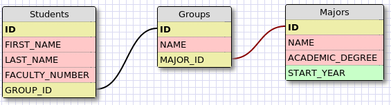

03. SQL и Java
Релацонна база от данни
SQL
Език за работа с данни.
Той позволява:
- Извличане на данни(Select)
- Вмъкване на данни(Insert)
- Редактиране на данни(Update)
- Изтриване на данни(Delete)
- Създавне на таблици, вюта, бази и други (Create)
Преди всичко UTF-8
SET NAMES utf8;
Извличане на данни(Select)
SELECT * FROM MAJORS
SELECT NAME, ACADEMIC_DEGREE FROM MAJORS
SELECT * FROM MAJORS WHERE NAME = 'Software Engineering'
SELECT * FROM MAJORS WHERE START_YEAR = 2011
Вмъкване на данни(Insert)
INSERT INTO MAJORS (NAME, ACADEMIC_DEGREE) VALUES ('Software Eginnering', 'bachelor')
JOIN заявки
SELECT Orders.OrderID, Customers.CustomerName, Orders.OrderDate
FROM Orders
INNER JOIN Customers
ON Orders.CustomerID=Customers.CustomerID;
Типове JOIN

MySQL
Създадена от Шведска компания през 1994
През 2008 купена от Sun
През 2010 Oracle закупува Sun
Втората най-популярна база в света според DB-Engines
sql2o
Java библиотека за изпълняване на SQL върху база
Може автоматично да създава обекти от резултатите от търсенето
Не е ORM
sql2o Свързване към база
String DB_URL = "jdbc:mysql://node5.codenvy.io:34189/www";
String USER = "www";
String PASS = "password";
Sql2o sql2o = new Sql2o(DB_URL, USER, PASS);
sql2o Select
get("/electives/:id", (request, response) -> {
int id = Integer.parseInt(request.params(":id"));
String sql = "SELECT title, description, lecturer " +
"FROM electives " +
"WHERE id = :id;";
try(Connection con = sql2o.open()) {
Elective elective = con.createQuery(sql)
.addParameter("id", id)
.executeAndFetchFirst(Elective.class);
return elective.toHTML();
} catch (Exception e) {
return String.format("Couldn't retrieve elective with id %d", id);
}
});
Транзакции
post("/electives", (request, response) -> {
String title = request.queryParams("title");
String description = request.queryParams("description");
String lecturer = request.queryParams("lecturer");
String query = "INSERT INTO electives (title, description, lecturer) VALUES " +
"(:title, :description, :lecturer)";
try (Connection con = sql2o.beginTransaction()) {
sql2o.createQuery(query).addParameter("title", title)
.addParameter("description", description)
.addParameter("lecturer", lecturer)
.executeUpdate();
con.commit();
} catch (Exception e) {
return "Couldn't insert new elective.";
}
return "Success!";
});
NoSQL бази

Демо проект
Без повече `mvn install`
Задача 0
Добавете колона created_at на таблицата electives
- Трябва по подразбиране да сочи момента на добавяне на реда
- Можете ли да го направите без да променяте кода на приложението?
Задача 1
Добавете функционалност за редактиране на избираема
- Например: HTTP PUT на /electives/1 със съответните параметри трябва да промени избираемата с id 1
Задача 2
Добавете функционалност за показване на избираеми по лектор
- Например HTTP GET /electives?lecturer='Nikolay Bachiyski' трябва да върне агрегиран toHTML() на всички избираеми с лектор Николай Бачийски